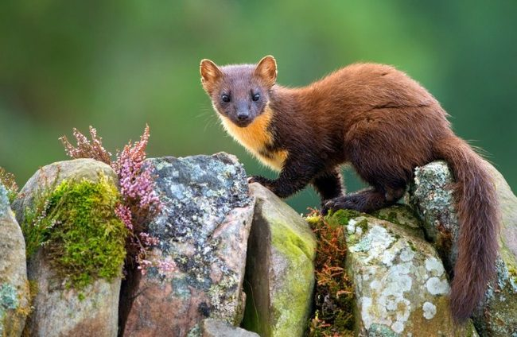
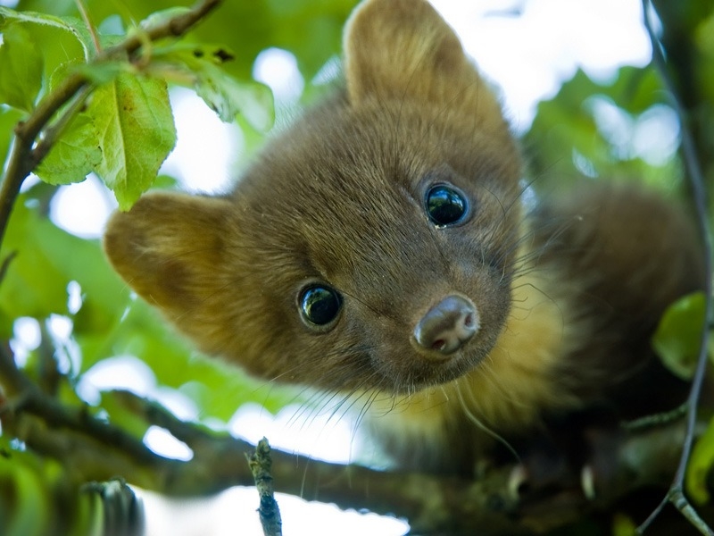
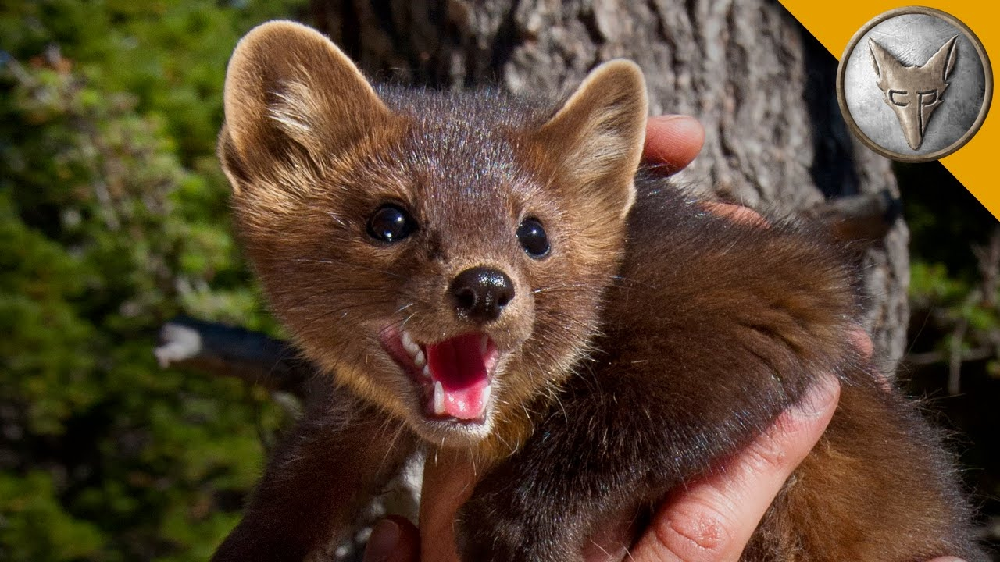

Житель лесных массивов, куница предпочитает верхний ярус вековых елей и сосен. Шустрая и необычайно ловкая, она стремительно лазает по деревьям, совершает головокружительные прыжки и схватывает добычу на лету.
| значение | результат |
|---|---|
| Вид | Куница |
| Семество | Куньи |
| Подтип | Позвоночные |
Предпочитая лесные угодья, куницы достаточно широко обжили территорию Земли. Их ареал обитания начинается с Западной Сибири, простирается к лесам Шотландии и Ирландии, затрагивает северные области, и продолжает свой путь к югу, в лесные просторы Кавказа и Средиземноморья.
Житель лесных массивов, куница предпочитает верхний ярус вековых елей и сосен. Шустрая и необычайно ловкая, она стремительно лазает по деревьям, совершает головокружительные прыжки и схватывает добычу на лету.
Предпочитая лесные угодья, куницы достаточно широко обжили территорию Земли. Их ареал обитания начинается с Западной Сибири, простирается к лесам Шотландии и Ирландии, затрагивает северные области, и продолжает свой путь к югу, в лесные просторы Кавказа и Средиземноморья.